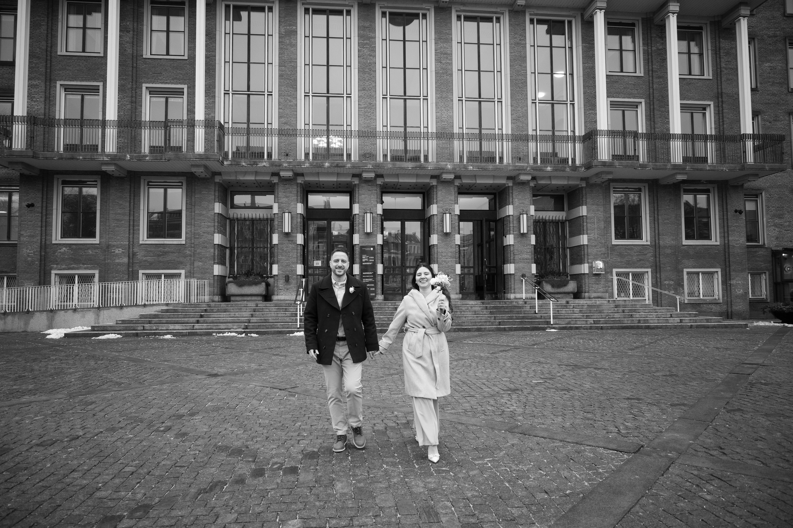

Lily Flores Photography
Honest, artful imagery for the moments that ask to be remembered with warmth, texture, and feeling.
Explore the GalleryStories with a cinematic pulse.
Lily photographs weddings, families, retreats, personal brands, and creative stories with a quiet editorial eye. Her work lives between documentary honesty and artful direction: warm, intentional, and deeply human.
Begin a Conversation
Gallery Overview
A curated opening edit: intimate vows, sunlit portraits, brand stories, and social content shaped with the same visual restraint.


Wedding stories, held close.
Quiet gestures, architecture, movement, and the emotional atmosphere around the day.
View Weddings
Intentional work for modern stories.
Each collection is composed with space, sequence, and visual continuity so related images stay together and the page breathes like an editorial spread.
Lifestyle
Soft, personal imagery for everyday tenderness and intimate milestones.
Portraits, launches, social presencePersonal Brands
Visual identity with polish, clarity, and human warmth.
Social storytellingContent Creation
Modern assets for creators, brands, and collaborators who need rhythm online.